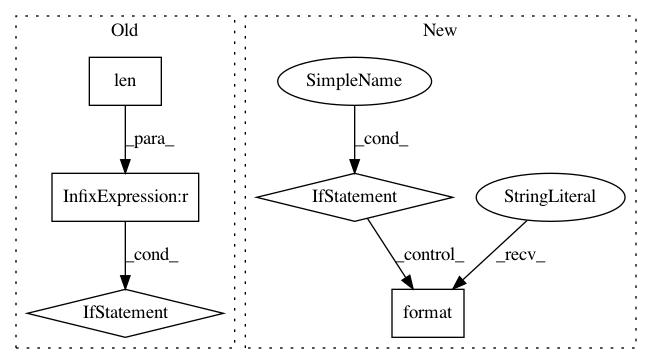

baecce5a6fbe4576ca8348a93dc56f07e7ba84f6,niftynet/contrib/csv_reader/csv_reader.py,CSVReader,_parse_csv,#CSVReader#Any#Any#,72
Before Change
def _parse_csv(self, path_to_csv, to_ohe):
tf.logging.warning("This method will read your entire csv into memory")
df = pd.read_csv(path_to_csv)
if df.columns[0] != "subject_id" and len(df.columns) >= 2:
tf.logging.fatal(
"The first column of the csv should be called "subject_id" and there should be at least 2 columns"
)
df.index = df["subject_id"]
assert set(df.index) == set(self.subject_ids)
df = df.loc[self.subject_ids]
if to_ohe and len(df.columns[1:])==1:
After Change
def _parse_csv(self, path_to_csv, to_ohe):
tf.logging.warning("This method will read your entire csv into memory")
df = pd.read_csv(path_to_csv, index_col=0, header=None)
if set(df.index) != set(self.subject_ids):
print(set(self.subject_ids) - set(df.index))
tf.logging.fatal("csv file provided at: {} does not have all the subject_ids".format(path_to_csv))
raise Exception
if to_ohe and len(df.columns)==1:
_dims = len(list(df[1].unique()))
_indexable_output = self.to_ohe(df[1].values, _dims)
return df, _indexable_output, _dims
In pattern: SUPERPATTERN
Frequency: 3
Non-data size: 5
Instances
Project Name: NifTK/NiftyNet
Commit Name: baecce5a6fbe4576ca8348a93dc56f07e7ba84f6
Time: 2019-06-05
Author: ucabtmv@ucl.ac.uk
File Name: niftynet/contrib/csv_reader/csv_reader.py
Class Name: CSVReader
Method Name: _parse_csv
Project Name: NifTK/NiftyNet
Commit Name: 2562b8547fce15f995bc36cadba34d3fd95acf58
Time: 2017-08-08
Author: wenqi.li@ucl.ac.uk
File Name: niftynet/layer/histogram_normalisation.py
Class Name: HistogramNormalisationLayer
Method Name: train
Project Name: ray-project/ray
Commit Name: 1d532d1cb8b829bdf7055a22c206032ca0b72e46
Time: 2020-04-02
Author: rkooo567@gmail.com
File Name: python/ray/dashboard/metrics_exporter/schema.py
Class Name: BaseModel
Method Name: parse_obj